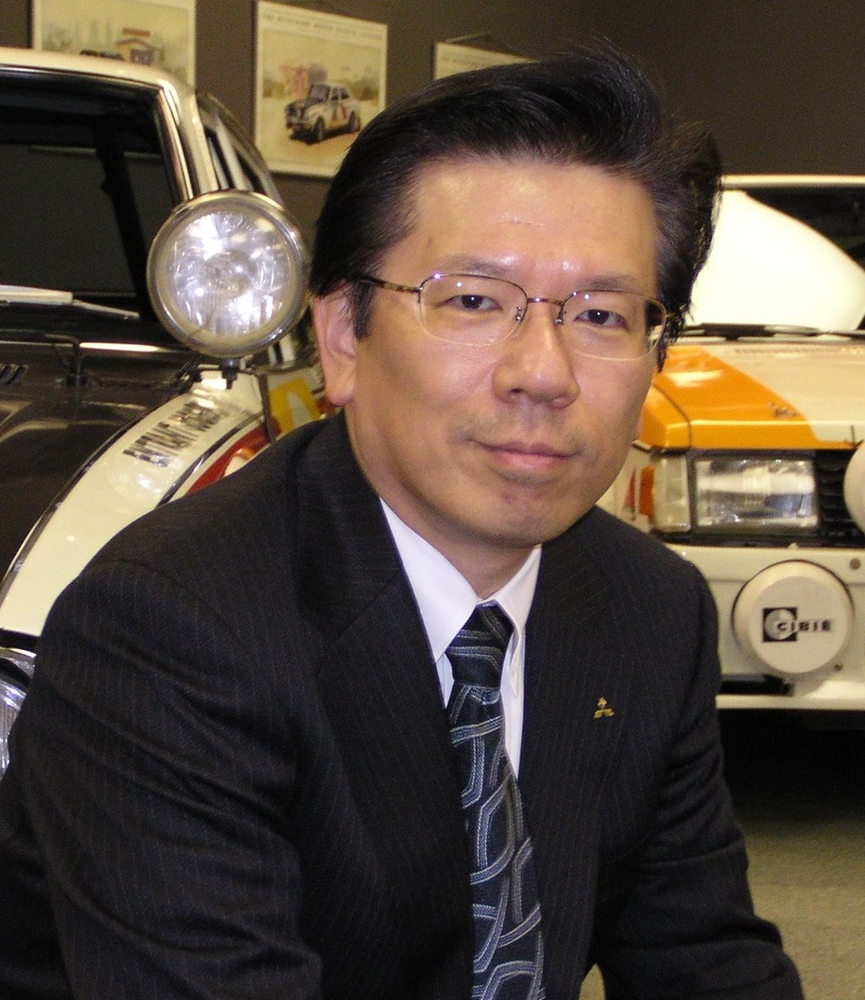
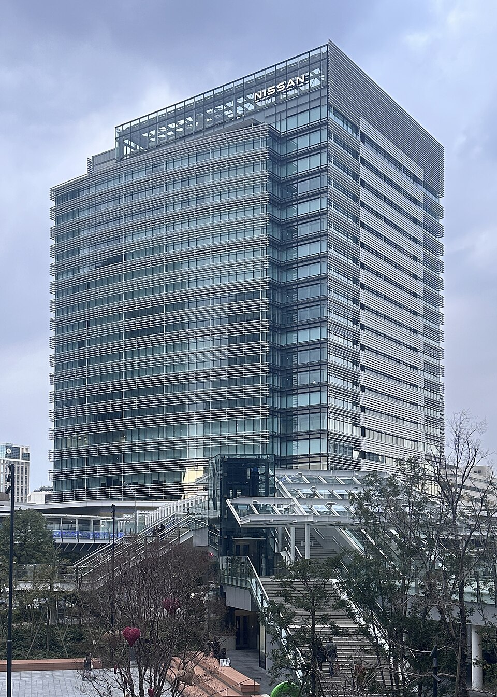
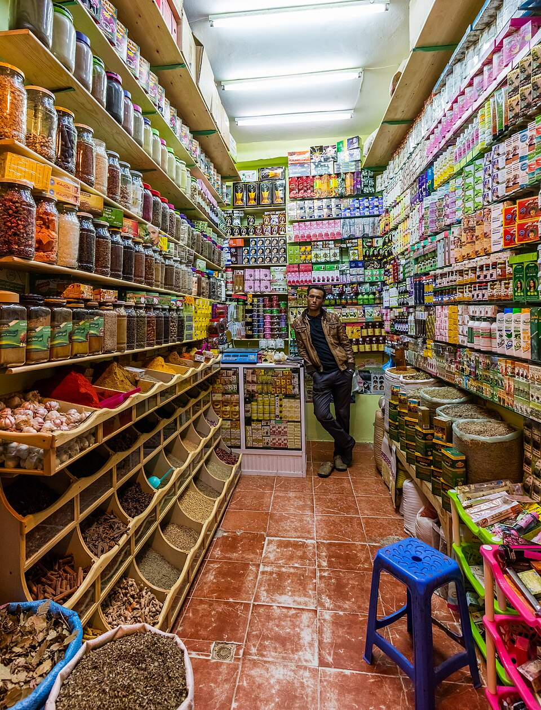
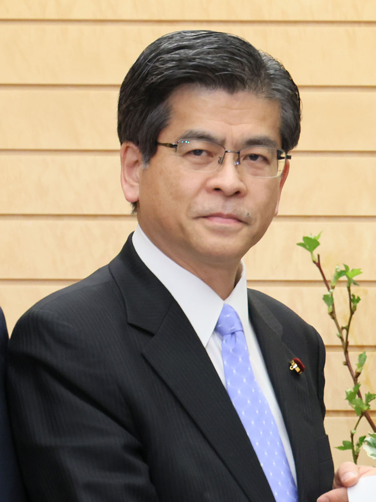
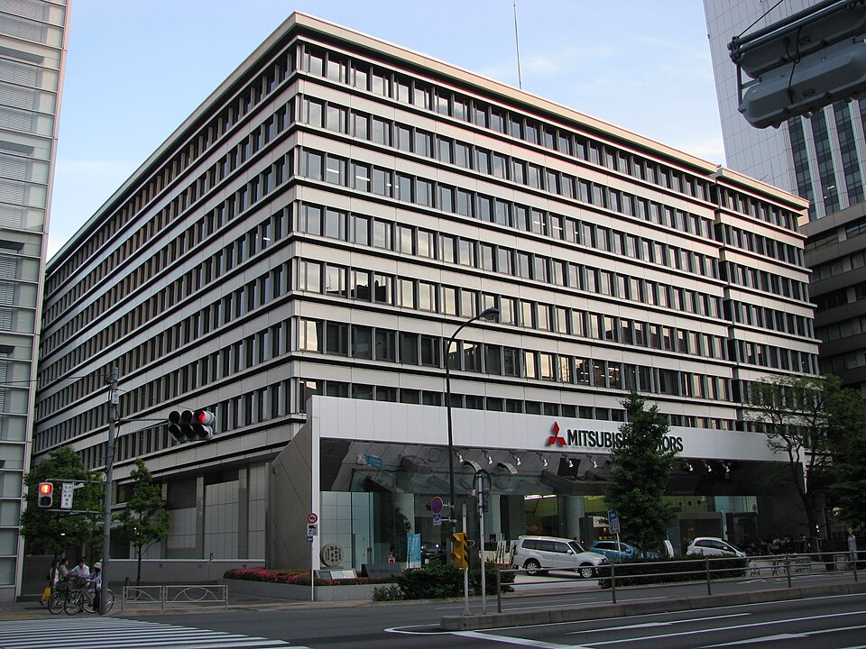
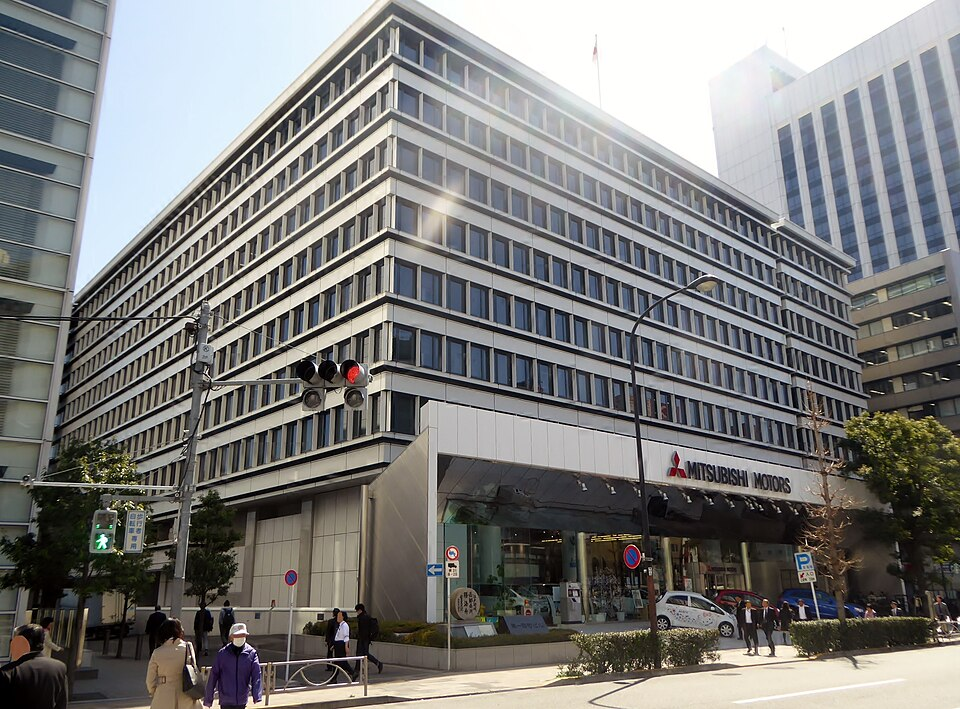
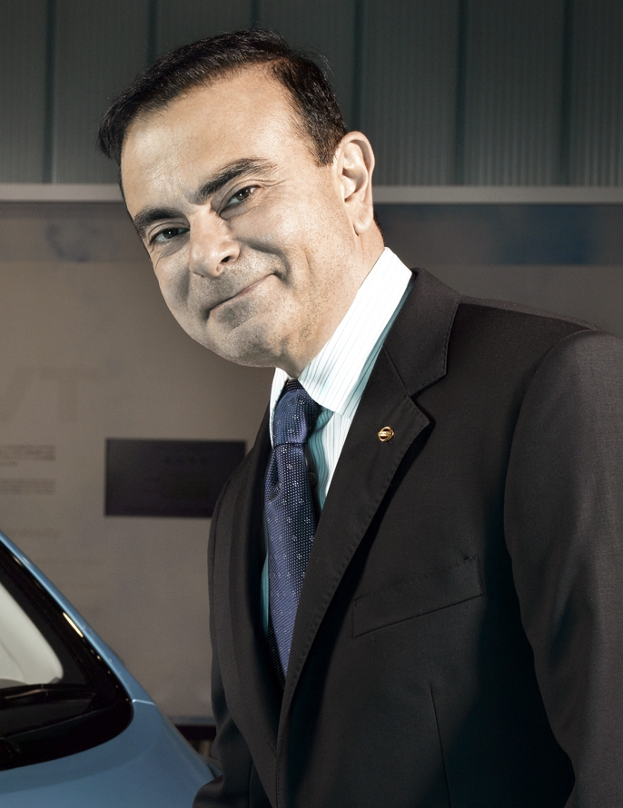

河
河添克彦
かわそえ・かつひこ
三菱自動車社長
役割：2000年問題と2002年死亡事故時の経営責任者
その後：山口県死亡事故で有罪判決と報道6
1977年頃〜2016年以降
三菱自動車では、1977年以降に重要な不具合情報を通常の市場品質情報から分け、販売店を通じた修理で運輸省への届出を避ける運用が続いた。2000年の内部告発で約23年間、約69万台の問題が公表された。1
2002年1月のハブ破損事故では1人が死亡し2人が負傷した。三菱ふそうの分社後も大型車の不具合をめぐる問題が続き、2004年には約74万台規模のリコール隠しが明らかになり、ダイムラー・クライスラーは支援を停止した。1
2016年には、eKワゴンなどの燃費試験で法令と異なる測定、記録、改ざん。机上計算が約25年間続いていたと特別調査委員会が認定した。日産は同年に三菱自動車株34％を取得し、資本提携に至った。2

三菱自動車の問題は、2000年、2004年、2016年に別々に発生した不祥事ではなく。品質情報と認証データを組織内で分けて扱う運用が長期に残った経緯として確認できる。1977年以降、車両の不具合・苦情情報は通常の市場品質情報とは別に管理され、運輸省へ報告すべき重要情報が社内にとどめられた。販売店を通じて届出をしない修理や交換も行われ、内閣府資料は約23年間、10車種以上、18件。約69万台の重要不具合情報が隠蔽されたと整理している。1
平成４年６月２１日，高知山秀急送有限会社が使用していた三菱自工製のトラックの左前輪のハブ（Ｂハブ）が走行中に輪切り破損し，左前輪タイヤがタイヤホイール，ブレーキドラムごと脱落するという事故（以下「山秀事故」という。）が発生した。当時，品質保証部門においてトラックのシャシーを担当するグループ長であった被告人Ｙが同事故を担当し，その処理についての重要度区分を最重要のＳ１（安全特別情報）と分類した。 三菱自工では，かねてから，リコール等の正式な改善措置を回避するなどの目的で，品質保証部門の判断により，品質情報を運輸省による検査等の際に開示する「オープン情報」と秘匿する「秘匿情報」とに分け，二重管理する取扱いをしていたが，被告人Ｙは，山秀事故に関する事故情報を秘匿情報の扱いとした。 この事故については，その後クレーム対策会議が開催され，並行してハブの強度に関する調査も行われたが，事故後１年が経過するに至り，ハブの輪切り破損の原因について結論を出さないまま同会議が終了となり、リコール等の改善措置は実施されなかった。
意味：事故情報を行政に開示する情報と秘匿する情報に分ける運用が、裁判所の事実認定として記録されている。
2000年6月12日、内部告発が運輸省に入り、隠蔽の存在が発覚した。運輸省は立入検査、刑事告発、行政処分へ進み。社内部門責任者と法人に罰金・略式命令があったと整理されている。ここで問題を外部へ伝えたのは、経営陣の決定ではなく内部告発だった。会社側では、欠陥情報を通常のリコール判定系統に送らず、社内だけで修理する仕組みが用いられていた。13
○藤井政府参考人 お答えいたします。 平成十四年に三菱自動車工業のトラックについて、ハブ、クラッチハウジングの破断による死亡事故が発生いたしました。その後、ハブにつきましては、三菱自動車工業が、国土交通省に対して整備不良が原因であるという虚偽の報告を行い、リコールを逃れようとしたことが平成十六年に判明しております。また、クラッチハウジングにつきましては、平成八年よりリコール隠しを行い、平成十二年以降は放置していたということが同じく平成十六年に判明しております。 三菱自動車工業は、先ほども御答弁申し上げましたとおり、平成十二年にリコール隠しの再発防止策を定めたところでありますけれども、今申し述べましたとおり、平成十六年に、リコールの原因となる事実の隠蔽が継続していること、さらには過去のリコール隠しの洗い出しが十分にできていないこと、こういったことが明らかになったところでございます。 この点につきましては、平成十二年の事案に対して十分に反省をすることなく、会社の隠蔽的な体質を改善できなかった当時の三菱自動車工業の経営陣に重大な責任があると考えているところでございます。
意味：国会答弁で、2004年問題を「虚偽の報告」「リコールを逃れよう」と明言し、経営陣の責任に結びつけている。
2002年1月10日、横浜市瀬谷区で三菱自動車製大型トレーラーの左前輪タイヤが脱落し、歩行者を直撃して1人が死亡。2人が負傷した。裁判で扱われたのは、過去のハブ破損情報から事故を予見できたか、品質部門と経営陣が対応を怠ったかという点だった。三菱自動車は2003年1月にトラック・バス部門を三菱ふそうとして分社したが、2004年3月に三菱ふそうがハブ破損のリコール方針を公表し、2000年問題後も不具合情報の扱いが争点になった。24
その後も，後記(4)の中国ＪＲバス事故に至るまでの間に，三菱自工製のトラックのハブの輪切り破損事故が１４件発生した。そのうちの７件は，平成５年３月頃から三菱自工製のトラック等に装備され始めたＤハブに関するものであった。 これら後続事故の中には，事故後に当該ハブが廃却されているためにその摩耗量が確認できないものや，平成６年６月２１日に発生した２件目のハブの輪切り破損事故事案（金八運送有限会社が使用していた三菱自工製のトラックの右前輪のハブ（Ａハブ）が走行中に輪切り破損したもの。以下「金八事故」という。）のように，報告されているハブの摩耗量が「０．０５～０．１０mm」にすぎない事例もあったにもかかわらず，いずれの事故についても関係会議の開催やハブの強度に関する調査が行われないまま従前どおり摩耗原因説に従った社内処理がされ，リコール等の改善措置は実施されず，事故関連の情報も秘匿情報として取り扱われた。
意味：同種事故が繰り返され、摩耗原因説を維持したまま調査・リコールを行わなかった事実を認定している。
2004年には、2000年問題を上回る約74万台のリコール隠しが発覚した。筆頭株主だったダイムラー・クライスラーは4月22日に財政支援を停止し、三菱自動車の社長は辞任した。宇佐美隆らは虚偽報告罪で起訴された時期が記録され、河添克彦らも逮捕された時期が記録されている。三菱自動車は2005年3月10日に残る三菱ふそう株20％を譲渡し、資本関係を解消した。経営上の支援関係が、リコール問題の再発によって停止と株式譲渡へ変わった。2000年問題を受けて三菱自動車はターンアラウンド計画を発表したが、2002年の事故と2004年の再発は、計画の存在だけでは品質情報の扱いを変えられなかったことを示している。2004年5月には宇佐美隆らが虚偽報告罪で起訴された時期が記録され、同年6月には河添克彦・宇佐美隆らが逮捕された時期が記録されている。会社分割は責任の所在を明確にする制度上の変更であったが、ハブ破損の情報がどの組織に報告され、どの時点でリコールの判断をするかという問題は残った。14
フロントホイールハブ（以下「ハブ」という。）は，トラック・バス等の大型車両の共用部品であり，前輪のタイヤホイール等と車軸とを結合するための部品であって，道路運送車両法４１条２号にいう走行装置に該当し，同条に規定する運輸省令が定める技術基準である道路運送車両の保安基準９条１項により，「堅ろうで，安全な運行を確保できるものでなければならない。」とされていた。ハブは，自動車会社関係者や運輸事業関係者等の間では，車両使用者が当該車両を廃車にするまで破損しないという意味で，「一生もの」と呼び習わされてきており，破損することが基本的に想定されていない重要保安部品であって，車検等の点検対象項目にはされていなかった。 三菱自工では，ハブは，トラック・バスの共用部品として設計，開発，製造されていて，後記(5)の本件瀬谷事故当時においては，開発された年代順にＡ，Ｂ，Ｃ，Ｄ，Ｄ’，Ｅ，Ｆの通称を付された７種類のものがあり，いずれのハブについても，フランジ部（鍔部）に亀裂が入り，これが進展して輪切り状に破損した場合には、前輪タイヤがタイヤホイールやブレーキドラムごと脱落する構造になっていた。
意味：裁判所が、ハブを通常の消耗品ではなく、破損が想定されない安全上の中核部品と認定している。
2002年事故に関連して、元市場品質部長の村川洋と元市場品質部グループ長の三木広俊には、業務上過失致死傷罪で2007年12月13日に有罪判決が言い渡された。山口県の大型トラック死亡事故では、河添克彦らに2008年1月16日に有罪判決が言い渡された。ハブ事故に関する道路運送車両法違反事件では、横浜簡裁の一審無罪後に東京高裁が2008年7月に逆転有罪判決を言い渡したと報じられている。株主代表訴訟では河添元社長ら取締役11人に1億6,000万円の支払いを求める和解が成立し、横浜市のタイヤ脱落事故では三菱自動車に遺族への550万円支払いを命じたと報じられている。567
2005 年（平成 17 年）2 月 18 日に開催された新人提言書発表会において、走行抵抗測定方法の問題が取り上げられ、国内仕向け自動車の型式指定審査の際に使用する走行抵抗は、惰行法によって測定するというのが法規の定めであり、法規に従って惰行法を用いるべきである旨の提言が、当時の新人社員からなされた。しかし、その後も MMC の運用は改められなかった。 2011 年（平成 23 年）2 月から 3 月にかけて、国内全従業員を対象として実施されたコンプライアンスアンケートの結果、開発本部内に存在するコンプライアンス問題として「評価試験の経過、結果についての虚偽報告」、「品質記録の改ざん。報告書の内容が虚偽」、「認証資料の虚偽記載」などの指摘がなされた。 開発本部及びコンプライアンス部の双方とも、報告を取りまとめたのみで、独自に調査を行うなどの対応は何も行わなかった。
意味：問題を指摘する機会が複数あったにもかかわらず、会社として確認・是正しなかった経緯が示されている。
2016年4月20日、三菱自動車はeKワゴン、eKスペース、日産向けデイズ、デイズルークスについて、燃費を実際より良く見せるため。法令と異なる方法で走行抵抗値を算出・操作したと国土交通省へ報告した。特別調査委員会は、法定の惰行法とは異なる測定方法、成績書への試験日・天候・気圧・温度等の事実と異なる記載、走行抵抗の恣意的改ざん。過去データを基にした机上計算の4種類を認定した。89
MMC は、関連する文書が保存されている過去 10 年に製造・販売したすべての車種について、燃費試験における不正行為の有無を調査し、現在も製造・販売している車種については 2016 年（平成 28 年）5 月 18 日に、過去に製造・販売した車種については同年 6 月 17 日に、その調査結果を国土交通省に報告するとともに、公表した。 具体的には、MMC は、下記の 4 つの種類の不正行為が存在したと認定し、それぞれの車種について、どの不正行為が存在したかを認定した。 4 つの種類の不正行為とは、 A： 法令で定められた「惰行法」と異なる走行抵抗測定方法を使用（A の不正行為） B： 法令で定められた成績書（負荷設定記録）に惰行時間（走行抵抗からプログラムで算出）、試験日、天候、気圧、温度等を事実と異なる記載（B の不正行為） C： 走行抵抗を恣意的に改ざん（C の不正行為） D： 過去の試験結果などを基に机上計算（D の不正行為） である。
意味：不正を四類型に分類し、単発のミスではなく、測定方法・記録・数値・計算の各段階に及ぶ組織的行為と認定している。
特別調査委員会は、1991年頃から開発用の高速惰行法で測定したデータを型式指定に流用し、惰行法で試験したような負荷設定記録を作成していたと認定した。この方法は発覚まで約25年間、全車種に近い範囲で行われた。燃費目標の実質的責任は性能実験部と認証試験グループに集中し、開発工数の不足と法令違反への意識の希薄さが背景として挙げられた。2016年5月12日、日産は第三者割当増資を引き受ける基本合意を決議し、10月に三菱自動車株34％を取得した。2016年の調査では、現在も製造・販売している車種について5月18日、過去に製造・販売した車種について6月17日に調査結果を国土交通省へ報告した。国の確認試験では現行9車種21台中、8車種15台で燃費が諸元値を下回り、最大約8.8％。平均約4.2％の差が確認された。日産向けデイズ系は46万8,000台で、eK系15万7,000台の約2.98倍だった。2016年9月2日には本社と名古屋製作所への立入検査が行われ、9月15日には再測定でも不正なデータ取扱いがあったとして追加指示が出された。国土交通省は、測定現場における法令遵守意識の欠如と経営陣のチェックの欠如を問題として認識した。2016年の問題では、三菱自動車が4月20日に報告し、特別調査委員会が4月25日に調査を開始した。調査対象には154人が含まれ、聴取回数は236回だった。調査委員会の報告書は、法規に従った測定を求める新人社員の提言が2005年2月18日にあったこと、2011年2月から3月の全従業員対象アンケートでも虚偽報告や認証資料の虚偽記載が指摘されたことを記録した。それでも運用は改められなかった。2016年9月の再測定で問題が続いたことにより、発覚後の対応も国土交通省の確認対象となった。2000年と2004年のリコール隠し、2016年の燃費不正は、いずれも情報を受け取る側が独自に検証できるかという問題でつながっていた。今回の公開資料上では、外部告発、事故、行政検査、第三者調査によって初めて。社内で別管理されていた情報が一つの事件として具体的に確認された。2011年のコンプライアンスアンケートでも、評価試験の経過や結果についての虚偽報告、品質記録の改ざん、認証資料の虚偽記載が指摘されていたが。開発本部とコンプライアンス部は報告を取りまとめただけで独自調査を行わなかった。910
14年型 eK スペースの開発は、燃費目標の達成に一喜一憂するだけで、自動車の真の実力を把握するという自動車開発の基本に忠実でなかったといわざるをえない。 14年型 eK スペースの開発過程では、14年型 eK ワゴンの時のように、専ら事業性の観点から燃費目標が繰り返し上方修正されることはなく、むしろ、燃費目標の達成が困難であるとの性能実験部の報告により、燃費目標を引き下げたり、燃費訴求車の開発を中止し、標準車に類別を変更して開発していた。 14年型 eK スペースの開発における問題は、シャシダイナモメータでの実走実験の際に排出ガスが漏れていて、再測定したところ、4WDについては、燃費目標を達成できないことが判明したという重大な出来事が起きたにもかかわらず、DD氏のみの判断で、4WDで意図的に有利なデータだけを利用して、低い転がり抵抗係数（μr）を引き下げて対策を講じたことが、一切露見しなかったことである。
意味：測定環境の異常を検証せず、有利なデータだけを採用できた管理不全を指摘している。






| 三菱自動車本社 | 東京都港区芝浦三丁目1番21号 | 2016年立入検査場所 | 19 |
| 三菱自動車名古屋製作所 | 愛知県岡崎市橋目町字中新切1番地 | 2016年立入検査・開発拠点 | 19 |
| 三菱自動車水島製作所 | 岡山県倉敷市水島海岸通1丁目1番地 | eK系軽自動車の製造拠点 | 9 |
| 横浜市瀬谷区 | 神奈川県横浜市瀬谷区 | 2002年ハブ破損・タイヤ脱落事故 | 2 |
| 横浜地方裁判所 | 神奈川県横浜市中区日本大通9 | ハブ事故・死亡事故刑事裁判 | 5 |
| 東京高等裁判所 | 東京都千代田区霞が関1-1-4 | 虚偽報告事件控訴審 | 7 |
| 国土交通省本省 | 東京都千代田区霞が関2-1-3 | リコール・燃費不正の監督機関 | 8 |
| ダイムラー・トラック／旧ダイムラー・クライスラー拠点 | ドイツ・シュトゥットガルト | 三菱ふそうへの出資・支援主体 | 4 |
| 日産グローバル本社 | 神奈川県横浜市西区高島1-1-1 | 2016年資本提携の出資主体 | 10 |
リコール問題では、ユーザーから販売店に届いた不具合情報が品質部門で別管理され、届出をしない修理や不十分な報告につながった。燃費問題では、性能実験部のデータと記録が型式指定審査に提出され、2016年に日産の資本提携へ至った。19
かわそえ・かつひこ
三菱自動車社長
役割：2000年問題と2002年死亡事故時の経営責任者
その後：山口県死亡事故で有罪判決と報道6
うさみ・たかし
三菱ふそう会長
役割：大型車部門の経営責任者
その後：虚偽報告事件・死亡事故で刑事責任を問われた7
むらかわ・ひろし
元市場品質部長
役割：ハブ破損情報への対応を担当
その後：業務上過失致死傷罪で有罪5
みき・ひろとし
元市場品質部グループ長
役割：ハブ破損情報への対応を担当
その後：村川洋とともに有罪判決21
ますこ・おさむ
2016年の三菱自動車会長兼社長
役割：燃費不正後に国土交通省の聴取対象となった
その後：2016年の経営責任者19
あいかわ・てつろう
2016年の三菱自動車社長
役割：燃費不正発覚時の経営責任者
その後：辞任時期の詳細は本調査で未確認19

かるろす・ごーん
日産社長・会長
役割：2016年の三菱自動車資本提携を主導した日産側経営者
その後：日産による34％出資22
いしい・けいいち
2016年の国土交通大臣
役割：不正後の追加指示文書を発出
その後：再発防止策の見直しを求めた19
わたなべ・けいいち
特別調査委員会委員長
役割：2016年燃費不正を調査
その後：報告書を公表9
やえがし・たけひさ
特別調査委員
役割：燃費不正の調査委員
その後：報告書の取りまとめに参加9
さかた・きちろう
特別調査委員・弁護士
役割：燃費不正を調査
その後：報告書の取りまとめに参加9
よしの・げんた
特別調査委員・弁護士
役割：燃費不正を調査
その後：報告書の取りまとめに参加9
くろい・けんすけ
三菱自動車専務執行役員
役割：国土交通省立入検査で聴取された
その後：聴取内容の詳細は本調査で未確認19
きたむら・たかゆき
三菱自動車常務執行役員
役割：国土交通省立入検査で聴取された
その後：聴取内容の詳細は本調査で未確認19
よこまく・さとし
開発本部長
役割：燃費試験を担う開発部門の管理職
その後：立入検査で聴取された19
ながはら・しげる
開発本部副本部長
役割：開発部門の管理職
その後：立入検査で聴取された19
わたなべ・しんいち
性能実験部長
役割：燃費試験の現場部門責任者
その後：立入検査で聴取された19
相関図は、2000・2004年の品質情報管理と2016年の燃費試験を担った社内管理ライン、提携先、監督機関。調査委員会を分けて示す。線の種類は上下関係、資金・資本、対立。告発・行政対応を表す。
上司と部下。三菱自動車本体の社長と、分社後のトラック・バス部門会長という経営ラインにいた。両者は2002年事故をめぐる刑事裁判の対象となった。赤旗6
上司と部下。市場品質部の部長とグループ長として、ハブ破損情報への対応を担い、同一事件で有罪判決を受けた。赤旗5
上司と部下。社長と市場品質部長の関係。裁判では会社の不具合情報管理と経営陣の責任が争点になった。赤旗6
上司と部下。三菱ふそう会長と三菱自動車市場品質部門の管理職。ハブ事故をめぐって別々の責任類型で訴追された。イミダス7
上司と部下。株主代表訴訟で、河添元社長ら取締役11人に会社への損害賠償が請求され、和解した。朝日新聞転載13
資金の出し手と受け手。ダイムラーは三菱ふそう株取得と財政支援を行ったが、2004年問題後に支援を停止した。三菱自動車社史／内閣府資料41
盟友。2011年に軽自動車共同開発のNMKVを設立し、2016年に日産が34％出資した。特別調査委員会報告書／日産資料910
対立・確執。2016年、三菱自動車の燃費不正が日産向け車種にも及び、日産は共同開発相手として問題対応を迫られた。特別調査委員会報告書9
資金の出し手と受け手。ゴーンの日産が益子会長時代の三菱自動車へ34％出資し、提携と経営監督を強めた。日産株主総会資料22
上司と部下。2016年の三菱自動車経営陣として、会長兼社長と社長の役割分担の下、国交省の聴取対象となった。国土交通省19
上司と部下。会長兼社長と専務執行役員の関係。立入検査では両者の組織上の責任が確認対象となった。同資料19
上司と部下。開発本部長と副本部長として、燃費試験を担う開発部門の管理職ラインにいた。同資料19
上司と部下。開発本部副本部長と性能実験部長。国交省は測定現場と経営陣双方のチェック不足を問題視した。同資料19
対立・確執。特別調査委員会は会社から独立した調査機関として、益子会長を含む経営陣の問題を調査した。特別調査委員会報告書9
上司と部下ではない公的監督者と対象企業。石井国交相名義の文書が益子会長宛てに追加指示を出し、再発防止策の見直しを求めた。国土交通省19
裏切り・告発ではなく法的責任追及。2000年問題後、会社・株主・検察が元役員の責任を追及し、株主代表訴訟では和解に至った。朝日新聞転載13
○藤井政府参考人 お答えいたします。 自動車の型式指定審査におきましては、基本的に、審査の実務を担う独立行政法人自動車技術総合機構が審査に必要なデータをみずから測定しております。ただし、燃費試験に用いられる走行抵抗値は、一定の気象条件のもとで複数回測定する必要があることから、自動車メーカーとの信頼関係を前提に、自動車メーカーから提出されたデータを使用しているところでございます。 三菱自動車工業は、この走行抵抗値について、長年にわたり、国が定めた方法以外の方法による測定、あるいは実測を行わない机上での計算、さらにはデータの改ざん、こういった不正行為を行っていたものでございます。 法令の遵守が適切になされないままにこのような不正事案が発生した点につきまして、国土交通省としては、三菱自動車工業において、測定現場における法令遵守意識の欠如、さらには経営陣のチェックの欠如、こういった問題があったものと認識しております。
意味：国会で、燃費不正の方法と、現場・経営双方の監督不全が行政側から説明されている。
判決、行政資料、特別調査委員会報告書で、暴力団、総会屋、仕手筋、フィクサー。政治家の口利きなどとの関係は確認できない。確認できない項目は未確認のまま示す。
組織名・人物未確認 確認できない
組織名・人物未確認 確認できない
人物未確認 確認できない
団体名未確認 確認できない
人物未確認 確認できない
口座・法人未確認 確認できない
人物未確認 確認できない
人物・捜査結果未確認 確認できない
本立入検査で、三菱自工の[1]不具合情報の収集・分析、[2]原因究明、[3]当省への報告に関し新たな問題点が明らかになりました。 ・販売店に対する不具合情報の発信の指示が徹底されておらず、市場からの不具合情報を十分に吸い上げられていませんでした。 ・販売店から、リコール対象となっていない期間の車両のオイルシールの抜けに係る不具合情報が上がってきていたにも関わらず、同社として確認できていないという理由のみで「抜け不具合はない」としました。 ・会社として平成20年1月に「措置不要」の結論を出してからの2年以上、原因究明作業が実質的に行われていませんでした。 ・車両の不具合発生状況の説明や、データの取扱・提示等が不適切でした。
意味：2000・2004年問題後にも、情報収集や原因究明と当局説明に同型の不備が残っていたことを当局が指摘している。
| 刑事手続 | 2000〜2001年 | 罰金・略式命令があったと整理 |
2000年問題のリコール隠し。個々の被告名・確定日・判決全文は未確認1
| 横浜地裁 | 2007-12-13 | 有罪判決 |
業務上過失致死傷罪。確定状況の詳細は本調査で未確認5
| 横浜地裁 | 2008-01-16 | 有罪判決 |
業務上過失致死罪。確定状況の詳細は本調査で未確認6
| 横浜簡裁 | 未確認 | 一審無罪 |
| 東京高裁 | 2008年7月 | 逆転有罪 |
道路運送車両法違反・虚偽報告。最高裁判決文は未確認7
| 東京地裁 | 2003-12-02 | 1億6,000万円支払いの和解 |
株主代表訴訟。和解13
| 民事裁判 | 2006年4月報道 | 遺族への550万円支払い、国への請求は棄却 |
横浜市のタイヤ脱落事故の損害賠償。報道で確認23
| 国土交通省 | 2004-03-11 | 道路運送車両法に基づくリコール |
ハブ破損リコール。届出1056等2
| 国土交通省 | 2016-08-30 | 確認試験結果公表と対応指示 |
| 国土交通省 | 2016-09-15 | 再測定でも不正扱いが判明し追加指示 |
MMC は、関連する文書が保存されている過去 10 年に製造・販売したすべての車種について、燃費試験における不正行為の有無を調査し、現在も製造・販売している車種については 2016 年（平成 28 年）5 月 18 日に、過去に製造・販売した車種については同年 6 月 17 日に、その調査結果を国土交通省に報告するとともに、公表した。 具体的には、MMC は、下記の 4 つの種類の不正行為が存在したと認定し、それぞれの車種について、どの不正行為が存在したかを認定した。 4 つの種類の不正行為とは、 A： 法令で定められた「惰行法」と異なる走行抵抗測定方法を使用（A の不正行為） B： 法令で定められた成績書（負荷設定記録）に惰行時間（走行抵抗からプログラムで算出）、試験日、天候、気圧、温度等を事実と異なる記載（B の不正行為） C： 走行抵抗を恣意的に改ざん（C の不正行為） D： 過去の試験結果などを基に机上計算（D の不正行為） である。
意味：不正を四類型に分類し、単発のミスではなく、測定方法・記録・数値・計算の各段階に及ぶ組織的行為と認定している。
14 年型 eK ワゴン・燃費訴求車について、当初の燃費目標は JC08 モード法で 26.4km/1 であったものが、その後、27.0km/1、28.0km/1、28.2km/1、29.0km/1、29.2km/1 と順次、引き上げられた。 しかし、度重なる燃費目標の引上げは、いずれも、実際には MMC の技術力を超えた無理な引上げであったといわざるをえない。このことは、本件問題発覚後に再測定された 14 年型 eK ワゴンの燃費が、せいぜい 27.1km/1 程度であり、初期の燃費目標と同レベルであったことからも裏付けられる。 燃費目標を達成するための責任部署は、事実上、性能実験部となっており、性能実験部がパワートレイン設計部や車両設計部等、燃費改善に関わる部門間の取りまとめを行っていたが、他部署の燃費改善メニューを実現するためには、長期の研究、実験を要するものや多額の費用を要するものが多いため、開発の途中からは、性能実験部が主業務とする「適合」という作業で細かな調整、改善を施すことにより燃費を改善させるほかない状況に陥っていたと認められる。
意味：達成不能に近い目標を現場部門へ集中させた経緯を、委員会が具体的な数値と組織構造で認定している。
14年型 eK スペースの開発は、燃費目標の達成に一喜一憂するだけで、自動車の真の実力を把握するという自動車開発の基本に忠実でなかったといわざるをえない。 14年型 eK スペースの開発過程では、14年型 eK ワゴンの時のように、専ら事業性の観点から燃費目標が繰り返し上方修正されることはなく、むしろ、燃費目標の達成が困難であるとの性能実験部の報告により、燃費目標を引き下げたり、燃費訴求車の開発を中止し、標準車に類別を変更して開発していた。 14年型 eK スペースの開発における問題は、シャシダイナモメータでの実走実験の際に排出ガスが漏れていて、再測定したところ、4WDについては、燃費目標を達成できないことが判明したという重大な出来事が起きたにもかかわらず、DD氏のみの判断で、4WDで意図的に有利なデータだけを利用して、低い転がり抵抗係数（μr）を引き下げて対策を講じたことが、一切露見しなかったことである。
意味：測定環境の異常を検証せず、有利なデータだけを採用できた管理不全を指摘している。
当委員会は、そもそも法規で定められた惰行法で走行抵抗を測定していなかった上、このすべてが恣意的な設定であり、およそ許されない不正行為であると認定している。 ただ、14年型 eK ワゴン（2WD）の転がり抵抗係数（μr）の 0.0055（当初使用しようとしたのは 0.0052）は、タイで実走実験を行い、そこで得られたデータのちらばる範囲内で、下限のデータ群を選別したというのであるから、正当化されるほどではないものの、まだ理論的な根拠はあったといえなくもない。 しかし、15 年型 eK ワゴン（2WD）の転がり抵抗係数（μr）は、実走実験を行うことなく、14 年型 eK ワゴン（2WD）の転がり抵抗係数（μr）のデータを、根拠なく、更に下方に描き直して導き出しており、走行抵抗の恣意的な算出をエスカレートさせたもので、走行抵抗の「不正な作出」といわざるをえない。
意味：委員会自身が行為を「およそ許されない」と明確に評価し、後年ほど改ざんが深刻化したと述べている。
2005 年（平成 17 年）2 月 18 日に開催された新人提言書発表会において、走行抵抗測定方法の問題が取り上げられ、国内仕向け自動車の型式指定審査の際に使用する走行抵抗は、惰行法によって測定するというのが法規の定めであり、法規に従って惰行法を用いるべきである旨の提言が、当時の新人社員からなされた。しかし、その後も MMC の運用は改められなかった。 2011 年（平成 23 年）2 月から 3 月にかけて、国内全従業員を対象として実施されたコンプライアンスアンケートの結果、開発本部内に存在するコンプライアンス問題として「評価試験の経過、結果についての虚偽報告」、「品質記録の改ざん。報告書の内容が虚偽」、「認証資料の虚偽記載」などの指摘がなされた。 開発本部及びコンプライアンス部の双方とも、報告を取りまとめたのみで、独自に調査を行うなどの対応は何も行わなかった。
意味：問題を指摘する機会が複数あったにもかかわらず、会社として確認・是正しなかった経緯が示されている。
フロントホイールハブ（以下「ハブ」という。）は，トラック・バス等の大型車両の共用部品であり，前輪のタイヤホイール等と車軸とを結合するための部品であって，道路運送車両法４１条２号にいう走行装置に該当し，同条に規定する運輸省令が定める技術基準である道路運送車両の保安基準９条１項により，「堅ろうで，安全な運行を確保できるものでなければならない。」とされていた。ハブは，自動車会社関係者や運輸事業関係者等の間では，車両使用者が当該車両を廃車にするまで破損しないという意味で，「一生もの」と呼び習わされてきており，破損することが基本的に想定されていない重要保安部品であって，車検等の点検対象項目にはされていなかった。 三菱自工では，ハブは，トラック・バスの共用部品として設計，開発，製造されていて，後記(5)の本件瀬谷事故当時においては，開発された年代順にＡ，Ｂ，Ｃ，Ｄ，Ｄ’，Ｅ，Ｆの通称を付された７種類のものがあり，いずれのハブについても，フランジ部（鍔部）に亀裂が入り，これが進展して輪切り状に破損した場合には、前輪タイヤがタイヤホイールやブレーキドラムごと脱落する構造になっていた。
意味：裁判所が、ハブを通常の消耗品ではなく、破損が想定されない安全上の中核部品と認定している。
平成４年６月２１日，高知山秀急送有限会社が使用していた三菱自工製のトラックの左前輪のハブ（Ｂハブ）が走行中に輪切り破損し，左前輪タイヤがタイヤホイール，ブレーキドラムごと脱落するという事故（以下「山秀事故」という。）が発生した。当時，品質保証部門においてトラックのシャシーを担当するグループ長であった被告人Ｙが同事故を担当し，その処理についての重要度区分を最重要のＳ１（安全特別情報）と分類した。 三菱自工では，かねてから，リコール等の正式な改善措置を回避するなどの目的で，品質保証部門の判断により，品質情報を運輸省による検査等の際に開示する「オープン情報」と秘匿する「秘匿情報」とに分け，二重管理する取扱いをしていたが，被告人Ｙは，山秀事故に関する事故情報を秘匿情報の扱いとした。 この事故については，その後クレーム対策会議が開催され，並行してハブの強度に関する調査も行われたが，事故後１年が経過するに至り，ハブの輪切り破損の原因について結論を出さないまま同会議が終了となり、リコール等の改善措置は実施されなかった。
意味：事故情報を行政に開示する情報と秘匿する情報に分ける運用が、裁判所の事実認定として記録されている。
その後も，後記(4)の中国ＪＲバス事故に至るまでの間に，三菱自工製のトラックのハブの輪切り破損事故が１４件発生した。そのうちの７件は，平成５年３月頃から三菱自工製のトラック等に装備され始めたＤハブに関するものであった。 これら後続事故の中には，事故後に当該ハブが廃却されているためにその摩耗量が確認できないものや，平成６年６月２１日に発生した２件目のハブの輪切り破損事故事案（金八運送有限会社が使用していた三菱自工製のトラックの右前輪のハブ（Ａハブ）が走行中に輪切り破損したもの。以下「金八事故」という。）のように，報告されているハブの摩耗量が「０．０５～０．１０mm」にすぎない事例もあったにもかかわらず，いずれの事故についても関係会議の開催やハブの強度に関する調査が行われないまま従前どおり摩耗原因説に従った社内処理がされ，リコール等の改善措置は実施されず，事故関連の情報も秘匿情報として取り扱われた。
意味：同種事故が繰り返され、摩耗原因説を維持したまま調査・リコールを行わなかった事実を認定している。
○藤井政府参考人 お答えいたします。 平成十四年に三菱自動車工業のトラックについて、ハブ、クラッチハウジングの破断による死亡事故が発生いたしました。その後、ハブにつきましては、三菱自動車工業が、国土交通省に対して整備不良が原因であるという虚偽の報告を行い、リコールを逃れようとしたことが平成十六年に判明しております。また、クラッチハウジングにつきましては、平成八年よりリコール隠しを行い、平成十二年以降は放置していたということが同じく平成十六年に判明しております。 三菱自動車工業は、先ほども御答弁申し上げましたとおり、平成十二年にリコール隠しの再発防止策を定めたところでありますけれども、今申し述べましたとおり、平成十六年に、リコールの原因となる事実の隠蔽が継続していること、さらには過去のリコール隠しの洗い出しが十分にできていないこと、こういったことが明らかになったところでございます。 この点につきましては、平成十二年の事案に対して十分に反省をすることなく、会社の隠蔽的な体質を改善できなかった当時の三菱自動車工業の経営陣に重大な責任があると考えているところでございます。
意味：国会答弁で、2004年問題を「虚偽の報告」「リコールを逃れよう」と明言し、経営陣の責任に結びつけている。
○藤井政府参考人 お答えいたします。 自動車の型式指定審査におきましては、基本的に、審査の実務を担う独立行政法人自動車技術総合機構が審査に必要なデータをみずから測定しております。ただし、燃費試験に用いられる走行抵抗値は、一定の気象条件のもとで複数回測定する必要があることから、自動車メーカーとの信頼関係を前提に、自動車メーカーから提出されたデータを使用しているところでございます。 三菱自動車工業は、この走行抵抗値について、長年にわたり、国が定めた方法以外の方法による測定、あるいは実測を行わない机上での計算、さらにはデータの改ざん、こういった不正行為を行っていたものでございます。 法令の遵守が適切になされないままにこのような不正事案が発生した点につきまして、国土交通省としては、三菱自動車工業において、測定現場における法令遵守意識の欠如、さらには経営陣のチェックの欠如、こういった問題があったものと認識しております。
意味：国会で、燃費不正の方法と、現場・経営双方の監督不全が行政側から説明されている。
本立入検査で、三菱自工の[1]不具合情報の収集・分析、[2]原因究明、[3]当省への報告に関し新たな問題点が明らかになりました。 ・販売店に対する不具合情報の発信の指示が徹底されておらず、市場からの不具合情報を十分に吸い上げられていませんでした。 ・販売店から、リコール対象となっていない期間の車両のオイルシールの抜けに係る不具合情報が上がってきていたにも関わらず、同社として確認できていないという理由のみで「抜け不具合はない」としました。 ・会社として平成20年1月に「措置不要」の結論を出してからの2年以上、原因究明作業が実質的に行われていませんでした。 ・車両の不具合発生状況の説明や、データの取扱・提示等が不適切でした。
意味：2000・2004年問題後にも、情報収集や原因究明と当局説明に同型の不備が残っていたことを当局が指摘している。
元経営陣・品質部門側：役員が個別の欠陥を認識していたか、過去の不具合情報から事故を予見できたかが刑事裁判で争われたと報じられている。6
国土交通省・検察側：ハブ破損情報を踏まえた対応を怠り、虚偽報告によってリコールを避けようとしたと説明している。26
三菱自動車：2016年問題について社内調査と再発防止策を進め、特別調査委員会を設置した。調査委員会の結論は新事実で変わり得ると留保している。9
国土交通省：高速惰行法が開発用試験として合理的かではなく、型式指定審査に法定の惰行法を使ったか、記録が事実を反映したかが問題だと説明している。19
日産：三菱自動車との資本業務提携により共同開発、購買、生産設備などのシナジーを狙った。10
調査上の未確認点：34％出資が過去の不正に対する責任追及を弱めたかどうかは、個別の損害・責任資料が未確認で判断できない。20